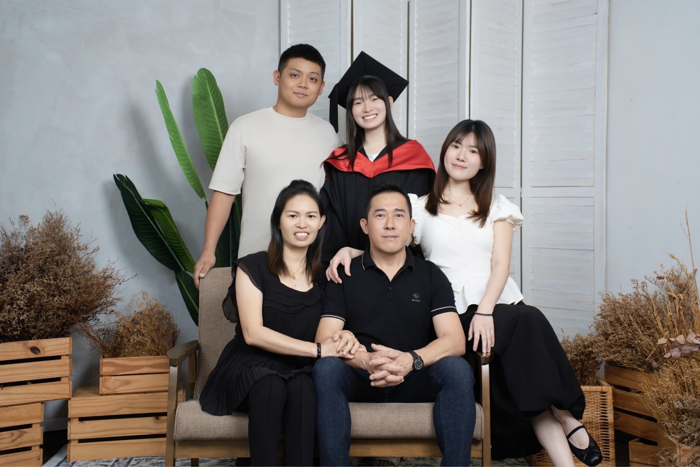
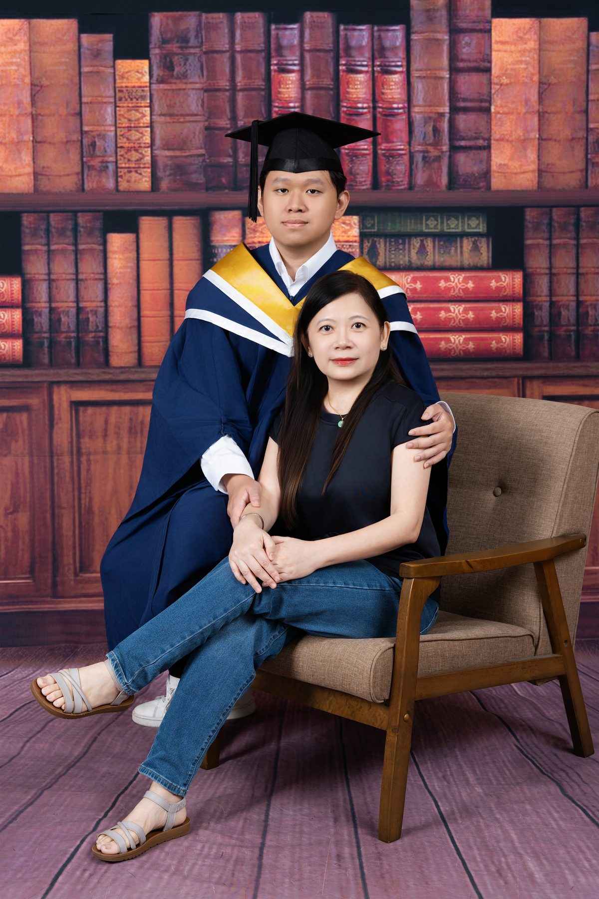

Premo Studio 吉隆坡 Old Klang Road 总店，提供影棚或校园户外的毕业照拍摄：专业打光、摄影师全程指导姿势、自然修图，个人照、团体照与全家福都能安排，拍摄后即可预览照片。Our Kuala Lumpur studio offers studio or campus outdoor graduation photography — professional lighting, full posing guidance from your photographer, and natural retouching. Individual, group and family photos are all available, with instant preview after the shoot.

现场备有超过 15 所大学 / 学院的毕业袍可免费借用，交通便利，适合来自吉隆坡与周边大学的毕业生，例如 Universiti Malaya (UM)、Sunway University、Monash University Malaysia、UTAR、INTI、MMU 等。We keep graduation gowns from 15+ universities and colleges on hand for free borrowing, and our location is convenient for graduates from universities around Kuala Lumpur — including Universiti Malaya (UM), Sunway University, Monash University Malaysia, UTAR, INTI and MMU.

超过 15 所大学 / 学院的毕业袍款式，借用完全免费、已包含在毕业照套餐内。KL 分店也备有多款毕业袍，实际款式请预约时查询；每种披肩颜色我们只有一件，建议预约时先告知想要的款式代号，以便提前准备。Real gowns from 15+ universities and colleges, free to borrow and included in every graduation photo package. Our KL branch also keeps graduation gowns on hand — ask about current styles when booking. We only have one of each shawl color, so let us know your preferred style code in advance.
查看全部毕业袍款式 View All Gown Styles →以简洁、合身为主，颜色尽量与毕业袍或背景相衬；也欢迎自备喜欢的服装，或与家人朋友做颜色协调的搭配。Keep it simple and well-fitted, in colors that complement your gown or backdrop. You're welcome to bring your own outfit, or coordinate colors with family and friends joining the shoot.
查看完整毕业照穿搭指南 →Read the full outfit guide →